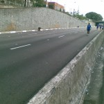
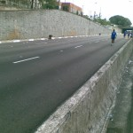

vamo, vamo, vamo…
Posts tagged Testemunhos Claudio

Sonho realizado
167 years
by Alecão
in Ex-sedentário

Todo ano eu repetia que iria correr a São Silvestre, menos no fim de 2009. Talves pelo fato de já estava correndo e sabia que 15K não é brincadeira.
O Claudio sempre repetia, que a São Silvestre era muvucada e só correria para me acompanhar. Mesmo escutando os problemas relacionados a ela, minha opnião não se alterava, queria porque queria participar.
Mas este ano de 2010, que comecei animado com a corrida do Carrefour, tive problemas em acreditar em mim devido a ter escutado palavras tortas de um médico, isso foi em fevereiro. Esse episódio me tirou por completo dos treinos. Ensaiei algumas voltas, sem sucesso. Até me inscrevi no desafio da Mata Atlântica e fiquei um montão gripado. Só participei por causa da insistência do Claudio e por causa que sou pão duro e não queria perder o valor da inscrição. Valeu a pena ter participado [1] [2], foi a minha esperança voltando. Nessa época, surgiu o convite para participar como blogueiro da Taeq, foi uma experiência maluca e ao mesmo tempo providencial… Tudo que podia dar errado deu. Torci o tornozelo (vi estrelas) ao tentar pegar uma moedo no chão do buzão e até mesmo o médico do GPA me dizendo que eu deveria desistir da corrida (era só 5K). Desiludido, e por empurrão da minha irmã. Procurei saber sobre cirurgia de estômago. O médico me disse que bastava querer, meu plano cobria e em 3 meses eu já estaria na mesa de cirurgia. Apavorei. Marquei com um psicóloga do grupo do mesmo médico que faria a cirurgia. Foi uma conversa providencial. E a partir dali decidi dar uma chance para mim, “Vou tentar emagrecer”. Foi ai que resolvi desprezar o que o médico do GPA me disse e resolvi correr a maratona de revezamento do Pão de Açúcar e terminei, quase morrendo (hehehe). Esta novela toda merece um post detalhado a parte… Espere, em breve.
Terminado a maratona de revezamento. Resolvi dar um UP em tudo e comecei a levar a sério. Sem cerveja, muita água, pouca comida e muito treino. E decidi… “E neste ano que vou correr a São Silvestre” e a Samsung vai ser um teste”. E assim fui fazer os 10K da Samsung. Que foi na minha opinião o melhor post deste blog.
Toda esta introdução é pra valorizar mais ainda um sonho antigo que era a de correr a São Silvestre e ainda uma coroação para toda a dificuldade emocional por qual passei em 2010.
Pois é corri, adorei e completei em 2 horas e 13 minutos… Abaixo do que eu esperava. E com o apoio do Claudio, que é mais que um primo, um irmão para mim.

E da Andrea, minha esposa, que esteve presente na festa (assistindo) e que para mim contou muito. Sem o apoio dela a vitória emocional não seria possível.

Os incentivos vinham de vários lados… Mas teve um que não esperava: Miguel Delgado – CEO dos Baleias me presenteou com um Manto Coral, na qual recebi por Sedex. Não pude acreditar… fiquei muito feliz. Nem conhecia-o pessoalmente, apenas pelos textos em seu site. E ainda ele VOLTOU para me acompanhar e incentivar no meio da Brigadeiro. Me senti importante. Já acumulo meu terceiro ídolo (Thiago, Enio e agora o Miguel). VALEU MIGUEL…

Nossa equipe Ex-sedentario esteve representada em peso nessa São Silvestre, sendo que a Andrea assistiu, Thiago superou seu tempo do ano passado (e continua sendo meu herói), Ana assistiu também e Claudião… brilhou como mascote dos Baleias (vestido de Esmeralda).

Meus paces foram (por quilômetro):
- 7:20 – Descida, todo santo ajuda, principalmente o Silvestre
- 7:20
- 7:46
- 7:46
- 9:18 – Claudio e Baleias estavam muito rápidos, meu objetivo era terminar a prova e resolvi entrar no meu rítimo
- 8:47
- 9:18
- 9:14
- 9:47
- 9:01 – Diminuiu graças ao reencontro com o Claudio
- 10:15 – Pontilhão entre a Rudge e a Rio Branco, matou!
- 9:25
- 9:56 – Andando a Brigadeiro… sem condições de correr
- 9:36 – O rítmo baixou graças ao Miguel.
- 8:22 – Paulista, Paulista… Com direito a sprint no final.
Veja o vídeo que eu, Claudio e Miguel cruzamos a linha de chegada. O Claudio com a Esmeralda (mascote Baleias) tropeçou no tapete da linha de chegada… Mas em nada ofuscou aquele momento. Foi lindo, foi lindo.
A coroação de fato foi receber a medalha São Sivestre/Baleias. Essa sim, depois da prova como deveria ser sempre.

Claudio, Claudião, anima até velório… Ele deve ter sido o cara mais fotografado… Toda criança gritava: “Olha o peixinho” e ele corria até a criança, ficava do lado e os pais tiravam uma foto. Isso aconteceu inúmeras vezes… E ri muito com esta situação. E por falar nisso. Era muito divertido ver as pessoas falando: “Olha o Peixe” e o Claudio gritando “É BALEIA”, ou senão, “Olha o Nemo” e o Claudio gritava “É BALEIA, O NEMO TEM LISTRAS”. A que eu mais ri foi “Olha um Santista” e o Claudio “ESSA BALEIA É CORINTIANA”. Me perdi do Claudio no Km 5 mas ele apareceu no Km 9 e me acompanhou até o fim… Foi sensacional ter ele do meu lado nessa minha vitória pessoal.


Obrigado a todo mundo que me incentivou e me incentiva. A alegria que eu senti nesse dia esta gravada e fixada. Quero viver mais e mais estes momentos. Num balanço cheguei a seguinte conclusão:
2010 foi 10! e 2011 vai ser 11!
E a festa continua nos outros blogs baleias, valeu galera pela super amizade, confira:
Um ano da primeira prova de Alex e Claudio (comemorando em grande estilo)
287 years
by Alecão
in Ex-sedentário
Este é um post elaborado a quatro mãos (do Alex e do Claudio).

Faz 1 ano em que eu (Alex) aceitei participar da minha primeira corrida, na época a idéia partiu de mim e o Claudio pirou ao escutar a idéia. Naquela corrida corremos lado-a-lado e com certeza sem ele não teria completado a prova.
Desta vez a coisa foi diferente. Claudião se preparou para encarar a maratona de Curitiba e eu quis fazer um Deja-vu correndo novamente a Samsung 10K e desta vez sozinho.
Falando nisso, todas as corridas que eu participei, tive companhia e nessa em particular eu corri sozinho… Portanto, tive que contar muito com a força de vontade.
Escrevendo esta introdução fiquei imaginando como iria fazer um texto a quatro mãos, sendo que não estamos juntos. Então eu imaginei… Escrevo minha parte e depois o Claudio acrescenta a dele. E como fazer isso? A resposta é colocando os horários e depois intercalando…

Deus! Escrever agora, emocionado, fica mais complicado.
A data realmente pedia uma comemoração especial. Afinal, um ano da primeira prova oficial depois de nossa resolução de parar de reclamar da má sorte/saúde e literalmente corrermos para o abraço de uma vida feliz!
Partamos então para a parte Parananense da comemoração, porque eu não comemorei sozinho em Curitiba, nosso idolo do Blog, o Thiago, esteve comigo na aventura. E que aventura:
21:45 (Claudio) – Sábado 20.11. -Thiago e eu estamos na Rodoviária do Tiete, aguardando o horário de partida do ônibus que nos conduziria até Curitiba.

02:30 (Alex) – Acordei, sem sono, maldita ansiedade, tentei dormir novamente sem condições. Mesmo assim fiquei deitado na cama até o relógio tocá-se.
04:30 (Claudio) – Domingo 21.11 – Thiago e eu somos acordados pela luz do ônibus, que anunciava a chegada à rodoviária de Curitiba. Uma troca de roupas no banheiro da rodoviária e um café pré-corrida com torrada (seca) e gatorade.
05:00 (Alex) – Saí da cama e procurando roupa, vesti dei tchau para Andrea e sai pensando… Por que fui aceitar essa idéia???
05:00 (Claudio) – Como ainda faltavam duas horas para a corrida, decidimos caminhar até a largada. Afinal, só encontraríamos o Paulo Motta com os nossos kits ás 06:15. Mas devido a informações erradas acabamos indo na direção contrária. Eram 05:50 quando decidimos tomar um ônibus ou táxi para a largada, mas ônibus não passavam e os táxis que passavam, não paravam. Bateu-me desespero, mas finalmente um táxi parou e em 07 minutos nos deixou na arena da corrida.
06:10 (Alex) – Cheguei na Assembléia legislativa, achei uma vaguinha do lado… Ufa, era minha maior preocupação. Já estava trocado. Só faltava esperar.
06:35 (Claudio) – O Paulo Motta chega com os nossos kits. No mesmo momento também aparece a Dani Dato e o seu anônimo esposo, Vinicius (que também correu sua primeira prova longa) e Enio.

07:00 (Claudio) – Dada a largada Thiago, Paulo e eu ainda ainda estávamos procurando o acesso para a pista. E uma supresa. O Enio disse que correria comigo, que em razão de um problema ainda não curado na lombar correria apenas 10kms (disse isso para me enganar) do meu lado.
Apesar da sensacional e emocionante companhia do Enio foi bastante estranho correr os primeiros 5km em último lugar. Thiago e Paulo seguiam um pouco a frente.
07:30 (Alex) – E como esperei… andei para um lado, andei para outro. Fiquei procurando os conhecidos e nada. Desisti e fui para a largada. O meu setor (preto) era exatamente do lado do Trio elétrico. No qual teve aquecimento, foi bem legal isso.


8:00 (Alex) – Largada!, começou o anda-anda e liguei para o Claudio… Ele já estava correndo desde as 7:00. Desejei boa sorte e ele a mim. Senti ali a presença dele e sabia que poderia encarar o desafio. Vamo embora! O início é pouco tumultuado comparado com o ano passado (bem pior). Encarar essa torcida do Cruzeiro não é fácil (né Fábio? 🙂 ). Falando nisso o Fábio comentou do tumulto do início… Saiba que no ano passado a coisa foi bem pior, porque os camisas brancas (caminhantes) estavam misturados a torcida do cruzeiro. Comecei bem com o rítimo de 7:30 por Km (primeiro e segundo quilômetros).


8:00 (Claudio) – O telefone toca e era o Alecão dizendo que estava começando a correr. Naquele momento já fiquei emocionado, era, enfim, o começo da nossa comemoração. Corrida vai, corrida segue, só encaixei o passo e a respiração por volta do km 11, quando já tinhamos passado por postos de hidratação bem bacanas.


8:30 (Alex) – Já estou no quarto quilômetro, passando do lado do Obelisco. A sombrinha das árvores acabaram (na República do Líbano). Fiquei com saudade da sombra… e já avistei a Rubem Berta… Lembrei que no ano passado, foi bem neste ponto que tive hiper-ventilação. No ano passado o circuito era diferente, o Obelisco já era no quinto quilômetro. Bateu a lembrança e também já imaginei… Tem mais subida pelo caminho (era 1 Km a mais na Rubem Berta). Decidi que o objetivo era terminar e diminuí o passo. Fiz o terceiro Km em 8:30 e o quarto a 9:00… Começaram as subidas da Rubem Berta… socorro. “Anda Alex”, “Anda Alex” era a voz que vinha de dentro. Comecei a caminhar rápido. E não era só eu. Tinha muita gente partindo para a mesma idéia. Corria na descida e NOOOOSSA uma subida interminável e caminhei novamente. O quinto e o sexto quilômetro foram feitos a 10:00 cada.
9:00 (Alex) – Sétimo quilômetro, lembrei que no ano passado eu esbocei uma reação aqui. Encarei que iria recuperar o tempo das caminhadas… meta fixa na cabeça… “Quero terminar em 1 hora e meia”. E fui correndo quando dava. Nessa hora vi que não era um dos últimos e comecei a ficar feliz… Não sou tão lerdo assim.
 

O Sétimo ainda tinha subidas e fiz com 9:00 e o oitavo e nono a 8:30 e apenas pensava… Vou conseguir, vou conseguir…
9:30 (Alex) – Estou no décimo quilômetro e apareceram placas com “Faltam 800m”, “Faltam 600m”, “Faltam 400m” uma alegria geral foi tomando conta, sombra de árvores voltaram… Tirei o boné:
 Nessa hora, avistei um senhor já de idade dando um sprint e virando a curva. Não me aguentei e disparei, quase atropelei 3 mulheres que corriam lado a lado e fui a busca do senhor. Uhuuuuuu. Animal… (veja o vídeo da chegada)
Nessa hora, avistei um senhor já de idade dando um sprint e virando a curva. Não me aguentei e disparei, quase atropelei 3 mulheres que corriam lado a lado e fui a busca do senhor. Uhuuuuuu. Animal… (veja o vídeo da chegada)
Liguei para o Claudio… Gritei: “Claudio fiz em uma hora e vinte seis…” E escutei a vibração dele do outro lado da linha… Ele vibrava, “você foi muito bem…” e emendou “Estou no Km 21. A corrida pra mim começa agora”. Fiquei muito emocionado nesse momento. Obrigadão Claudio, por estar comigo e vibrar comigo mesmo quando eu estou correndo sozinho. O tempo oficial marcou os mesmos 1:26:00 (arredondando).


Na sequência liguei para a Moça (Andrea) que vibrou muito junto com as crianças. Se no ano passado a frase que repeti no post foi “Consegui, Consegui, Consegui”…. A deste ano é “Perseverei, Perseverei, Perseverei” e Vamo, vamo, vamo… Claudião continua agora…
9:30 (Claudio) – O telefone toca novamente. Era o Alecão ainda ofegante dizendo que havia terminado a prova em 01h26min. Fui tomado por uma emoção tão grande que eu berrava muito alto na rua. Comecei a chorar e o Enio, sempre comigo, lembrou-me de que ainda tinhamos 21 kms pela frente. Foi inevitável não acelerar naquela hora. A primeira parte da prova foi muito linda (sem cansaço a paisagem fica mais agradável) Havia árvores cujas flores pareciam girassóis.


10:30 (Claudio) – O sol aparece com todo seu explendor. No km 28, aproximadamente uma caminhada rápida na subida, seguida de um trote contínuo até o km 31, a partir de onde as caminhadas ficaram recorrentes, mas firmes. Passamos pelo Thiago já voltando embalado e logo em seguida pelo Paulo Motta. Num dado momento eu estou caminhando sem ritmo e decido bater palmas para ditar o ritmo da caminhada, o que ajudou bastante porque a caminhada virava corrida muitas vezes.


A esta altura eu já sabia que atingiria meu objetivo de completar a maratona em bom estado físico e dentro do tempo regumentar. Já fazia alguma festa, mas sem dispensar nenhuma ajuda oferecida pela estrutura da prova.


Depois do km 36 o Enio tentava arrancar de mim um corredor forte, mas única coisa forte que encontrava era caminhada (menos mal). E, de quando em vez, um trote.

Caminhando e trotando eu cometi uma heresia em maratona. Parei na placa de 40km, quando todos ganham força e aceleram, mas acheia-a tão linda. Afinal, eu nunca havia sequer visto uma placa de 4okm, assim, tão de perto.


Depois dessa placa eu queria chegar logo, mas as penas não respondiam ao comando da ansiedade, o que resultada em tiros de 25 metros seguidas de caminhadas de 200. O Enio me apontava o pórtico da chegada, mas ele estava muito longe e no alto de uma subida. O Paulo Motta já tinha voltado para me rebocar e seguimos os três, mas sprint mesmo somente nos ultimos 100 metros. Eu ainda consegui fazer uma graça. Parei diante do tapete e pulei em cada faixa (três) com os pés juntos.
Eu havia completado a prova. E no maravilhoso tempo de 05H21Min01Seg.
O Paulo Motta, que no mês de agosto me presenteou com a inscrição da corrida e todo incentivo de três meses, deu-me um caloroso abraço. Nessa hora eu me emocionei. Delícia que eu desejava experimentar há muito tempo. E eu gostei disso. Eu fiz uma loucura planejada e em, apartado, farei um post especial para agradecer a todos que me incentivaram e que me foram decisivos na fase destinada a preparar meu corpo para suportar a brincadeira.
O Enio foi sensacional. Sacrificou a corrida dele para estar comigo durante todo o tempo, incentivando-me sempre e vibrando comigo. Jamais esquecerei isto meu amigo. Devo-lhe um rim.
E o Thiago? Este terminnou voando e o perdemos. Depois que o encontramos que ele esclareceu que após um descanso foi nos esperar na chegada, quando já havíamos passado. Liguei para a Mari e, lógico, para o Alecão, o fecho de nossa especial comemoração.
Mas a maratona da viagem ainda não havia terminado. Conheci o veloz Baleias Tinil, que me recebeu de braços e coração abertos. Um verdadeira festa Baleias.

Quando encontramos o Thiago, vimos novamente Tinil, desta vez acompanhado do divertidíssimo Julio Cordeiro. E já rolou ali mesmo uma comemoração com Gatorade Espumante, como chamou o Julio, em seu blog.
Não posso deixar de comentar que Thiago e eu tomamos banho no chuveiro fornecido pela organização da prova. Num container. Um monte de magricelas pelados. Senti-me uma panceta no meio do charque. Inusitado, para dizer o mínimo. Mas aquela altura TUDO ERA FESTA.
O Paulo até adiou a ida dele ao amigo que o hospedava, para ficar para o almoço/cervejada, que contou com a presença também do Ésio Cursino.

Thiago e eu saimos as pressas para a rodoviária. Eu estava muito feliz e ligeiramente bêbado, o que tornou tudo mais divertido. Assim que o ônibus partiu fui ao banheiro e nas ultimas 6 poltronas haviam maratonistas (legítimos). Fiquei ainda quase duas horas em pé no corredor do ônibus proseando. A sensação era de que o ônibus se deslocava para frente e girando ao mesmo tempo no próprio eixo.
A nossa comemoração de um ano foi sensacional. Justo durante o período em que me dediquei aos treinos longos e a dieta (tive de perder 8 quilos que estavam atrapalhando muito), o Alecão também se superou, E MUITO, vencendo barreiras quase intransponíveis para fazer bonito na equipe Taeq durante a Maratona de Revezamento Pão de Açucar. Emagreceu 12 quilos e fez uma lindeza de prova comemorativa. Diminuiu vinte minutos daquela prova e com um fantástico sprint.
O Alex é o meu herói e parceiro de toda uma existência. É também o Herói deste blog, porque segue feliz e aceitando suas limitações mesmo tendo no encalço o mala do Claudião. Mas sempre contando também com Thiago, nosso ídolo, incentivador e parceiro até nas roubadas mais incríveis, como este bate-e-volta para Curitiba. Valeu Thiagão!!!! Cadê o Guilherme Maio? Gui, eu também tenho meu “mestre Thiago”.
(Alex) E tudo começou assim:

Recomendo ir (mas sem o Claudio, porque ele abri o bico antes da hora)
67 years
by Claudião
in Ex-sedentário
Todos que correram ontem, o fizeram debaixo de muita chuva. Ate que em relação a isso saí com roupa apropriada e cuidei bem dos pés.
Eu recomendo o passeio que fiz. Muito bom, mesmo com chuva intensa e ininterrupta de três horas (tempo que durou meu treino).
http://www.mapmyrun.com/route/br/s%e3o%20bernardo%20do%20campo/843128558867252866
O trecho da Rodovia Anchieta foi meio “tenso”, mas porque chovia muito e ainda estava escuro, mesmo já sendo 06 horas. Principalmente quando fiz o meia -volta-volver, senti falta de companhia. Eu estava com corpo e hidratação em ordem. A chuva não deixou sequela alguma. Faltou foi força de vontade mesmo. Com 02H53Min caminhei um pouco não sei exatamente por que e me desnanimei. Corri mais um pouco, andei mais um pouco, mas isso nem marquei. Sei que foram 25km 3horas. Meu primo Marcos me resgatou às 09:00 eu estava na pista a 03h20min, caminhando e com frio.
O passeio é belo e fica a recomendação.
PS: Último post rosinha. Ufa!

Vídeo reportagem do 5º Desafio da Mata Atlântica
57 years
by Alecão
in Ex-sedentário
Sei, sei… vão dizer… “Mas esta aventura foi faz tempo”.
É o dia-a-dia corrido nosso. Pegar os arquivos, editar, subir para o youtube… leva tempo. Mas ontem tomei coragem e fiz isso tudo.
Rever o vídeo me emocionou. Pois eu estava gripado, tanto que depois da prova tive febre alta e fiquei de molho.
Adorei lembrar da largada, da dificuldade, da visão linda da serra do mar, da paisagem postal, do Enio dos Baleias nos esperando na chegada, do chocolate quente, do brinde (tim-tim)…
5º Desafio da Mata Atlântica – 2ª Parte
97 years
by Claudião
in Ex-sedentário
Quem estiver chegando agora, não deixe de ver o post anterior, onde há a impressão do Alex e as fotos, cuja maioria completa o sentido das que postarei agora.
Antes de tudo, parabenizo o meu grande parceiro Alecão, que com gripe e tudo mandou ver na Serra. Sua caminhada foi 10 e o seu espírito 1000. Com você foi tudo mais mágico, primão: eu te amo!
O dia não poderia ter sido mais especial. Durante a semana eu ameacei várias vezes vir aqui chorar a minha fraquesa e os quilos que só fazem aumentar. Mas em vez disso eu decidi sorrir na Serra.
A prova foi maravilhosa, com uma organização muito boa, diante de toda a logística envolvida. Desce-e-sobe de atletas e volumes, tudo pela Rodovia Anchieta. Sobe-e-desce de motoqueiros, pela própria pista, atentos e dipostos a ajudar a quem precisasse. Sou só elogios.


Muitos já foram os comentários. Todos efusivos que me deixam muito emocionado. Não tenho palavras para expressar a felicidade que sinto por tanto carinho e consideração com quem não tem o corpo de atleta amador. Sinto-me honrado pelo reconhecimento do “amador” que sou da atividade, interatividade e festividade com algo que é realmente bom. O corredor amigo que há muito nos acompanha no blog, Sandro Guedes, foi logo comentado sobre o nosso incentivo a galera. Valeu Sandro!!!!
Na prova, fomos nós mesmos, brincalhões. Atazanamos a todos. E o sorriso de aprovação não tem preço. Eu desejo muito que as pessoas que conhecemos venham até aqui resgatar as imagens e principalmente receber nosso caloroso abraço e consideração.
O Enio, coitado, foi pego no laço pelo Baleia Mor – Miguel Delgado – e preso com peia firme. E não ratiou, gostou até. O cara é um Santo. Já é amigo, viu. Sorte ou sina? O tempo lhe dirá… Se eu já sonhava maratonar por aí, sua história, incentivo e disposição para ajudar/participar, só fizeram aumentar esse sonho. Eu vou diminuir minhas recaídas, vou parar de aparecer mais gordo e mais magro em cada fotografia, e vou no caminho certo. Não foi apenas um encontro de Ex-Sedentários Baleias com integrante Baleia. Foi uma junção mesmo de amizade muito bacana. Valeu Miguel!


Sobre as pessoas da prova. Muitas me marcaram. Eu não sou sensitivo nem nada que o valha. Mas quando o Sr. Ítalo aproximou de mim com aquele sorrisão, senti uma energia muito forte, muito positiva. Senti como se meu pai tivesse aparecido ali. Senhor de 70 anos, com uma felicidade incrível fazendo aquele maravilhoso passeio junto do Filho, Ricardo, celebração pura. Além dele, inesquecível a imagem da Senhora Rosana. A felicidade dela se aproximando da chegada foi espetacular. São as duas imagens de força e felicidade que eu registrei para mim, e em fotografias (tomara que eles as encontrem por aqui).


Além deles houve as pessoas como nós, que se divertiram conosco e nos acolheram com a primeira olhada. Nas fotos se vê os Dundes (Claudio e Alex) e o Duendes da Serra. As Garotas Super Cor-de-Rosas, super simpáticas e super atletas, da equipe Lamartine: Heleni, Solange e Rosa. Eu espero vê-las muitas outras vezes.


Tirei muitas fotos bonitas do Cesar Conforti, que subiu decidido todo o percurso não demorando para deixar-nos para trás. Parabéns a você e a Helga (as fotos de vocês ficaram legais demais).


Outro abraço para a Vanessa e Luciana, troca de máquinas, fotos e poses e muitos sorrisos. Enfim, foi tudo muito maravilhoso e com certeza estou cometendo o grave pecado do esquecimento. Perdoem-me os não citados. Ah, engraçada demais a cena da Tomiko entre mim e o Alecão. Ela virou um cisquinho.
Mais uma vez agradeço ao trabalho técnico do Alecão que cuidou de todas as fotografias aqui.


.jpg "5-desafio-mata-atlantica")
5º Desafio da Mata Atlântica
127 years
by Alecão
in Ex-sedentário
Estava gripado e sem coragem de ir, mas o Thiago me incentivou e o Claudio também. E fui. Não me arrependi, foi maravilhoso mesmo com a gripe piorando quando cheguei em casa (tive muitas dores, nausea, ansia e febre), mas nada que um analgésico e 4 horas de soneca não resolvessem. To com gostinho de quero mais…
Nesta prova tivemos a oportunidade de conhecer o Enio integrante dos Baleias, muito bacana, gostei mesmo dele, nos incentivou bastante.
Sem mais enrolação, estou colocando as fotos que tiramos… São mais de 200 e tem mais para colocar, volte depois e olhe as fotos novas. Tem vídeo também que ainda estou editando e colocarei em outro post.
O primeiro e legítimo regenerativo.
37 years
by Claudião
in Ex-sedentário
Domingo fiz o meu primeiro treino regenerativo, porque nunca havia corrido após treinos longos. No sábado a família toda dormiu cedo novamente. Inclusive quando saí de casa para correr (05:50) o Henrique já estava acordado em nosso acampamento na sala.
Como era para ser regenativo, cuidei para que fosse no plano e em local bonito. 06:25 horas eu estava no Parque Villa Lobos. Três voltas na pista de lá (3km) pelo tempo de 1H. Fazia frio.
O primeiro regenerativo de muitos que virão.
EM TEMPO: O post de sábado em fiz no computador de casa. Não sei o que acontece. Tive de reescrevê-lo.
Novo, de novo
57 years
by Claudião
in Ex-sedentário
Nada como dormir cedo. Como Acontece em casa em Feriados que não viajamos, montamos acampamento na sala. Vinte e dua horas e eu já estava “ZZZZZZZZ”, como diz o Fábio Namiuti.
Sono rejuvenescedor, porque acordei às 4:50 horas me sentindo muito bem. Pude ir de Carro para a USP e cheguei lá às 05:55, garoava. Cheguei no bolsão da Psicologia e o Paulo Motta já estava partindo para ot treino. Ele voltou para me esperar. Nas três primeiras horas o Paulo treinaria na subida da Biologia. E lá fui com ele.
Sobre o Treino.
Subi 7 vezes a subida da Biologia, mas só o trecho de rampa constante que, segundo o relógio do Paulo, são 700 metros. O Paulo descia correndo, porque precisará estar preparado para isso nas próximas provas. Recomendou-me que descesse caminhando. Nâo fosse pelo Paulo o treino teria sido um fiasco. Foi bastante difícil para mim. Eu descia caminhando, sem ritmo, o corpo esfriava e era um martírio recomeçar a rampa. Na subida o Paulo cruzava comigo e pedia para diminuir o ritmo, se não não faria muitas rampas. Ele tinha razão. Se eu fiz sete, foi porque em todas eu estava muito lento. Como o Paulo já havia falado foi um exercício de paciência.
Contando com os 13 minutos que demoramos para chegar na Biologia, foram 1H50Min na Biologia, despedi-me do Paulo que completaria ainda as três horas de rampa antes de correr no plano por mais não sei quanto tempo.
Terminado o meu treino na biologia, decidi rodar um pouco, pelo restante do percurso que fazíamos em abril. Não demorou muito e pedi para acompanhar outro corredor, o Sílvio, conversando a corrida passou rapidinho com quarenta minutos para fechar o dia.
Total de Treino (copiando o blog do Fabão) 02H30Min. Incluindo aquecimento, rampas, caminhadas e corrida leve.
Estou me sentindo outra Pessoa. Felizmente parece que foi há muito tempo vivi aquele dia de perrenge, na sexta-feira.
Fica o meu agradecimento ao Paulo Motta pelas dicas. Nada como alguém mais experiente. As caminhadas foram chatas, porém profícuas.
Senti falta do Thiago no treino.
Treino no feriado – Parece que foi há muito tempo
38 years
by Claudião
in Ex-sedentário
Sexta feira, 17:25 horas. Estou acabado. Não me comportei bem em festa junina e estou me sentindo muito mal. Ai aquele pastel. Aquele cuscus. Pastéis doces. Doces. Não dormi bem estou muito mal. Estou me arrastando. Dores no corpo e fraquesa. Eu treinei ontem, no feriado, bem cedinho. O treio foi tão bom, que por causa do mal-estar que estou sentindo agora parece que aconteceu há séculos.
Acordei no feriado às 05:00 da manhã. Saí de casa 05:30. Meia hora de caminhada e cheguei no ponto de encontro. Treinei com um cara que mora no Prédio da Minha Sogra, como sempre chego e saio de lá “a caráter”. Impossível não rolar assunto de corrida. Combinamos e deu tudo certo. O Grandão (é este o apelido dele) faz o percurso em 45 minutos. Fizemos em 57, o que para mim foi muito bom. Se quiserem ver, segue o link abaixo. Deverei repetir o percurso outras vezes. Se possível com o Grandão, para ele me puxar
http://www.mapmyrun.com/route/br/s%e3o%20paulo/751127568287491242
Eu quero acordar diferente amanhâ. E treinar!
Eu corro, paro e volto a correr. O trem também!
98 years
by Claudião
in Ex-sedentário
Eu trotei por 40 minutos. Das 06:10 às 06:50. Banho rápido e não deu tempo de tomar café. Eu tinha de tomar o trem logo para chegar no escritório.
Mas o trem falhou. Os onze minutos dos quais tanto me vanglorio para chegar no metrô Barra Funda viraram 41 minutos. São 4 estações (Pirituba-Lapa-ÁguaBranca-BarraFunda). Na Lapa, a supresa. Tivemos todos de descer do trem. Em bloco compactado nos dirigirmos para a plataforma contrária passando pela passarela. O povo ficou louco. Todos esbravejavam e reclamavam do trem. Um aperto medonho. Desde novembro de 2000 é a primeira vez que isto acontece. Por que a galera estressou tanto? Lógico que estaria puto se tivesse atrasado para reunião. Mas o trem em si, não merecia tantos impropérios.
Eu aderi à multidão que tira foto da desgraça com celular. Mas hoje eu estava feliz e não via a fatalidade como desgraça. Até fiz um novo amigo, o Roger, com quem tirei foto quando as coisas se ajeitaram.
O trem corre, são apenas 11 minutos para fazer o trajeto. Hoje, parou, mas logo continuou na corrida de que todos esperavam. E o meu bom humor devia mesmo a minha felicidade de ter me reencontrado na corrida depois de ter parado. Parei mas continuo na corrida que me levará a ter o sono perfeito, pra sempre!


.jpg "DSC01732 (1024x576)")
.jpg "DSC01870 (1024x576)")
.jpg "DSC01913 (1024x576)")
.jpg "IMG_7314 (1024x768)")

{kind=link}
{kind=link}
{kind=link}
{kind=link}
{kind=link}
{kind=link}
{kind=link}
{kind=link}
{kind=link}
{kind=link}
{kind=link}
{kind=link}
{kind=link}
Últimos comentários